Skip to contentFieldwork
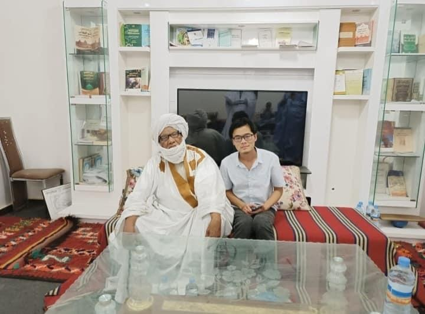
与谢赫欧玛尔·乌尔德·西迪纳摄于昆塔卡迪里耶教团中心，毛里塔尼亚首都努瓦克肖特，2023年6月。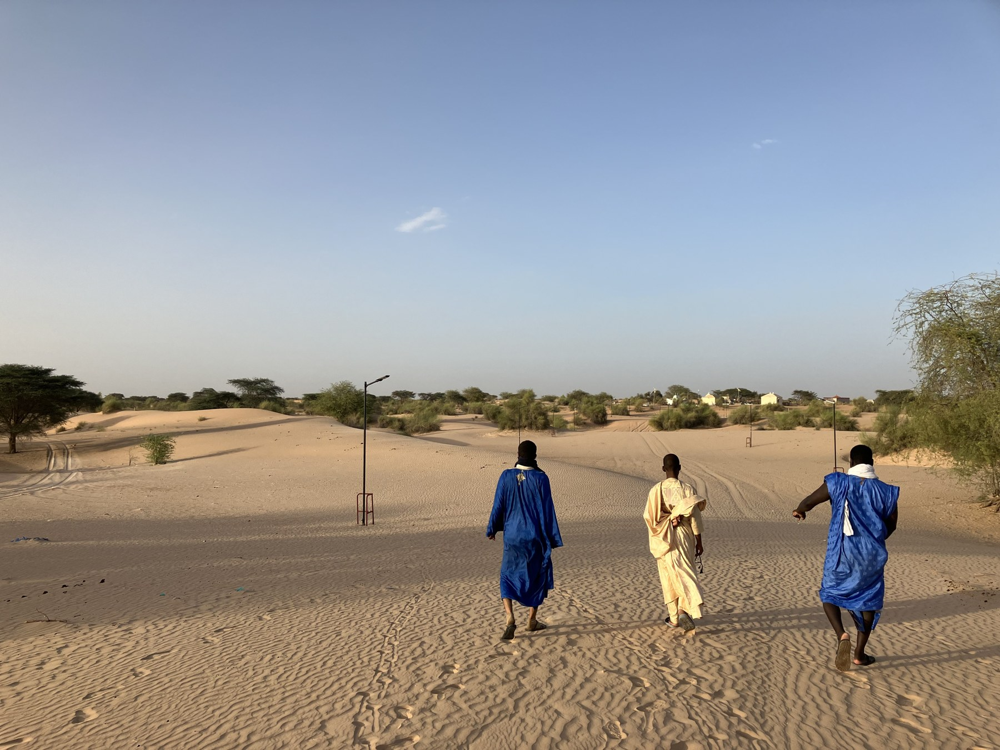
Nimjat, Mauritania, June 2023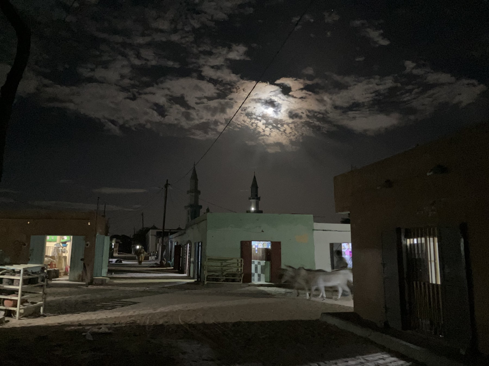
Night at Maʿṭa Mulānā, Mauritania, June 2023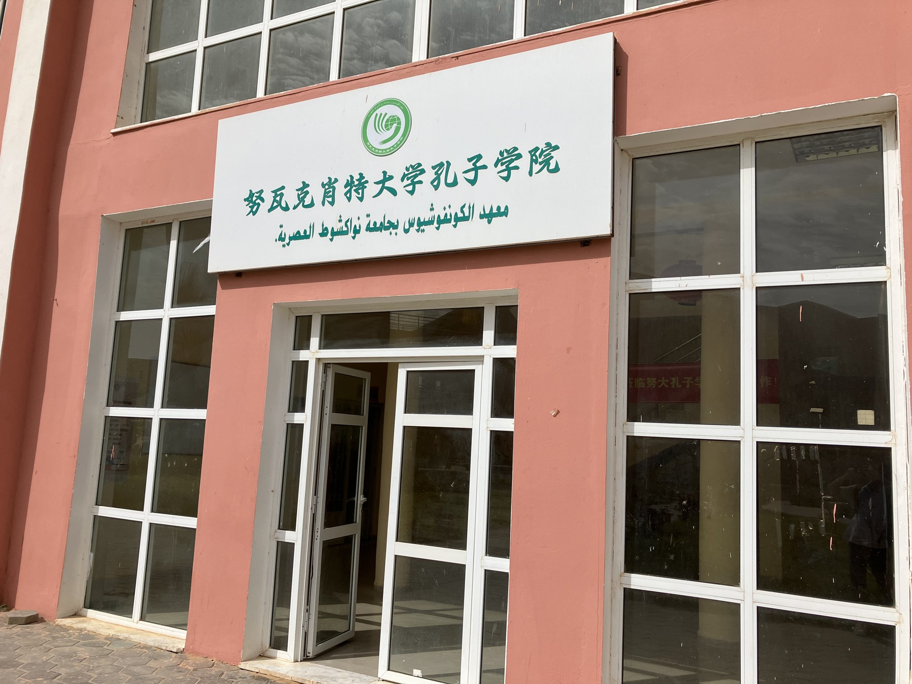
The Confucius Institute at Nouakchott Modern University, Mauritania, May 2023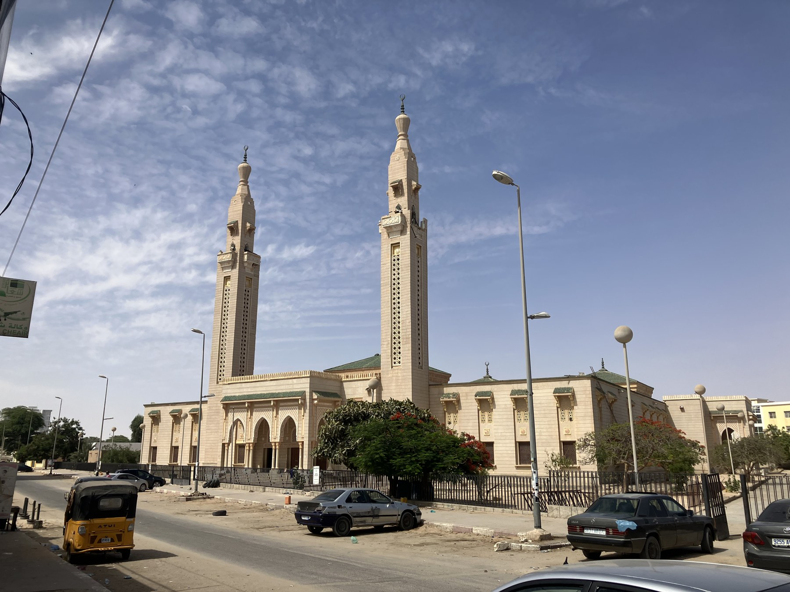
Saudi Mosque of Nouakchott, Mauritania, May 2023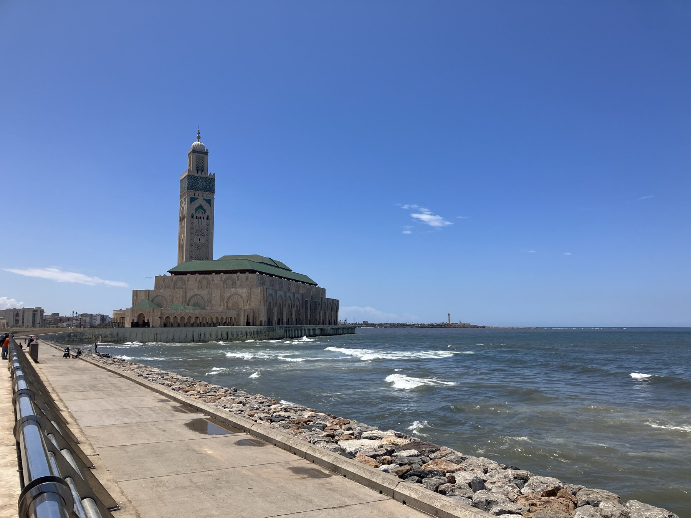
Masjid al-Ḥasan al-Thānī, Casablanca, Morocco, May 2023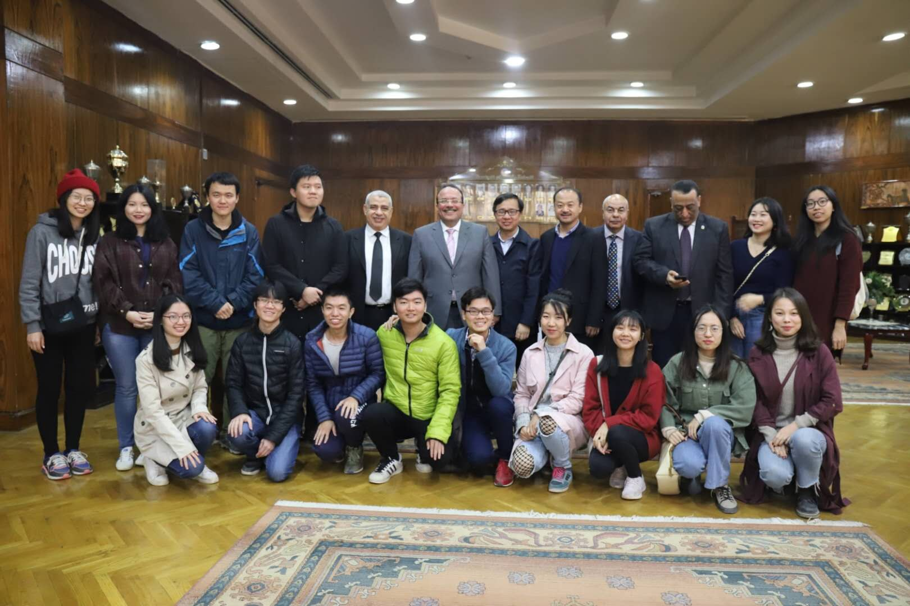
With classmates in Tanta University in Egypt, Jan. 2019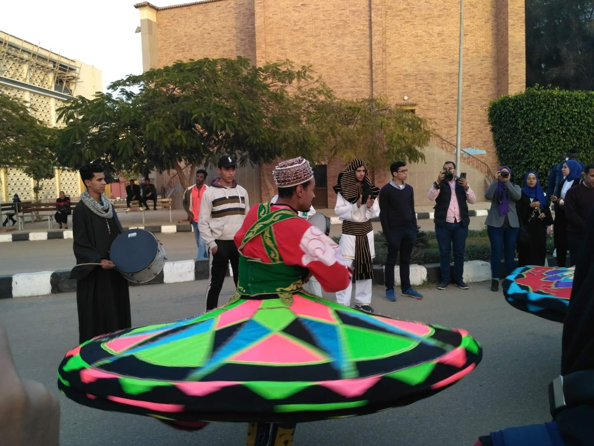
A man wearing "tennura" performing Sufi dance in Mansoura, Jan. 2019.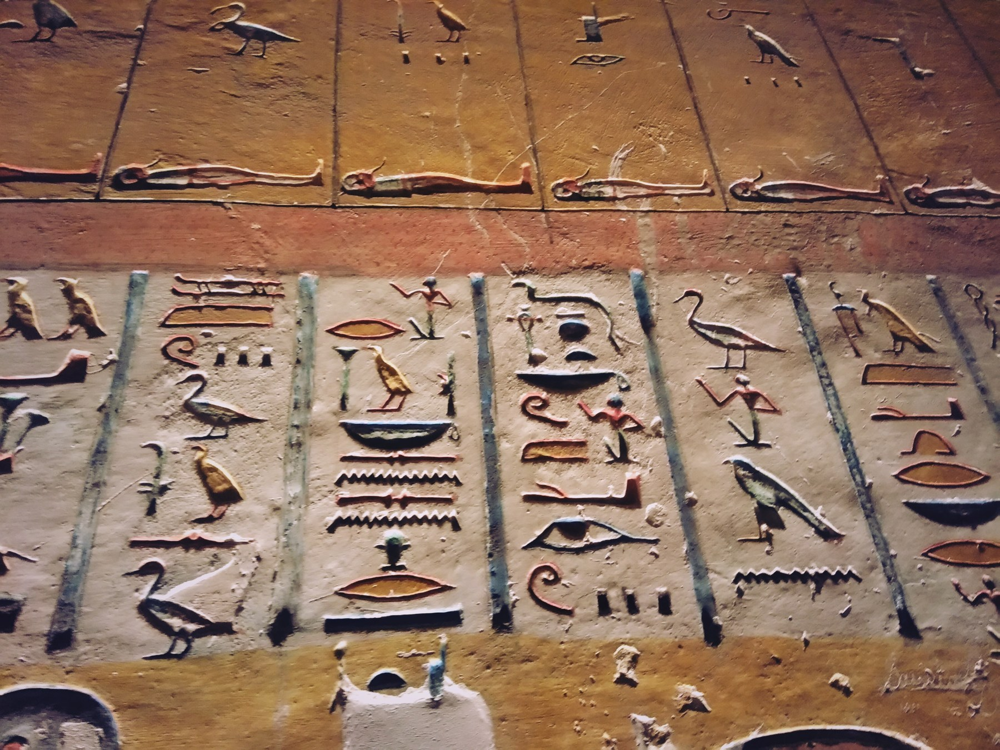
A hieroglyphic board in the Karnak Temple, Luxor, Jan. 2019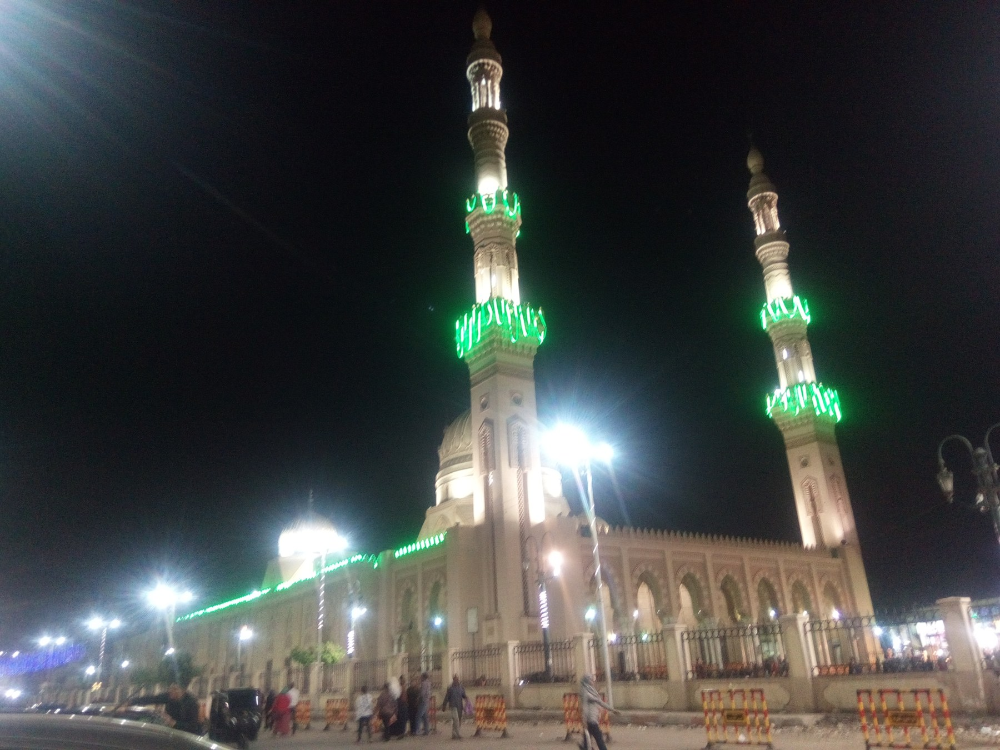
Al-Sayyid al-Badawī Mosque, Tanta, Egypt, Nov. 2018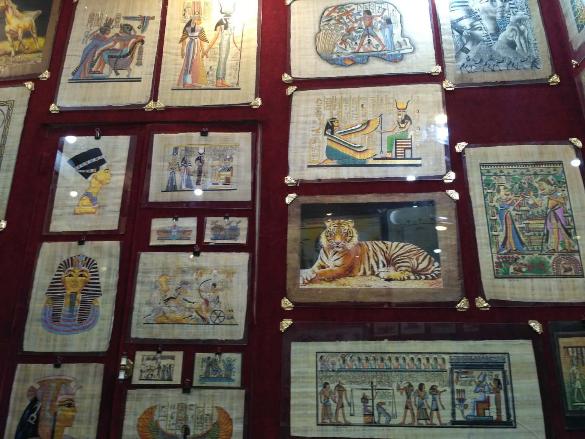
Inside of a papyrus store in Khan el-Khalili, Cairo, Nov. 2018